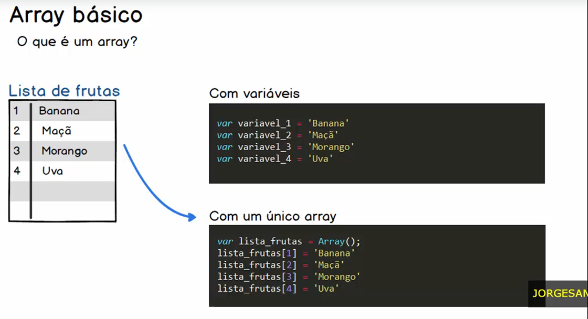
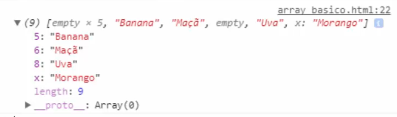
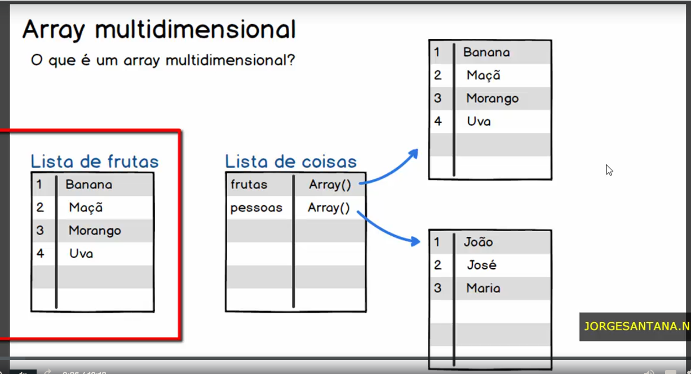
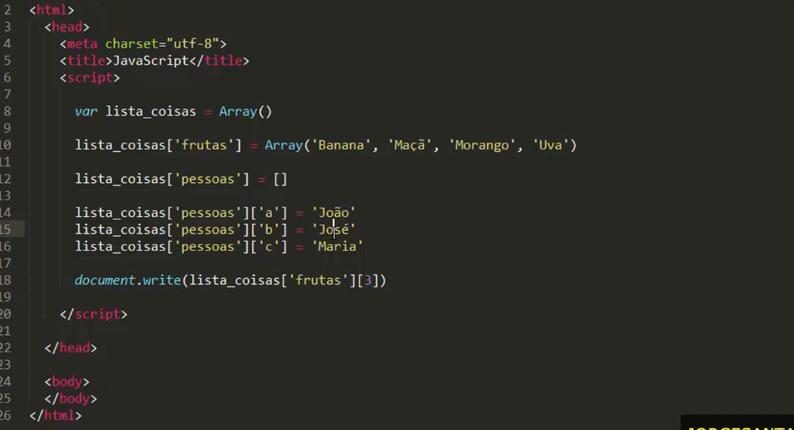

Dentro da programação arrays, imitam listas.
Podemos imaginar quão trabalhoso seria criar enumeras variaveis para armazenar infomações do tipo listas.
caso se iniciei um Array, com indices alterados, o resultado da "tamanho" (lenght) será divergente.
var lista_frutas = Array()
lista_frutas[5] = 'Uva'
lista_frutas[7] = 'Banana'
lista_frutas[8] = 'Morango'
lista_frutas[9] = 'Macã'
console.log(lista_frutas);
o resultado será:
Devemos estar atento para não cair nesse erro e ser surpreendido.
Como aprofundamento, temos arrays que aponta para outros Arrays

var lista_coisas = []
lista_coisas['frutas'] = ['Banana', 'Maça', 'Morango', 'Uva']
lista_coisas['pessoas'] = ['João','Maria','Jose']
console.log(lista_coisas)
Forma mais complexa
